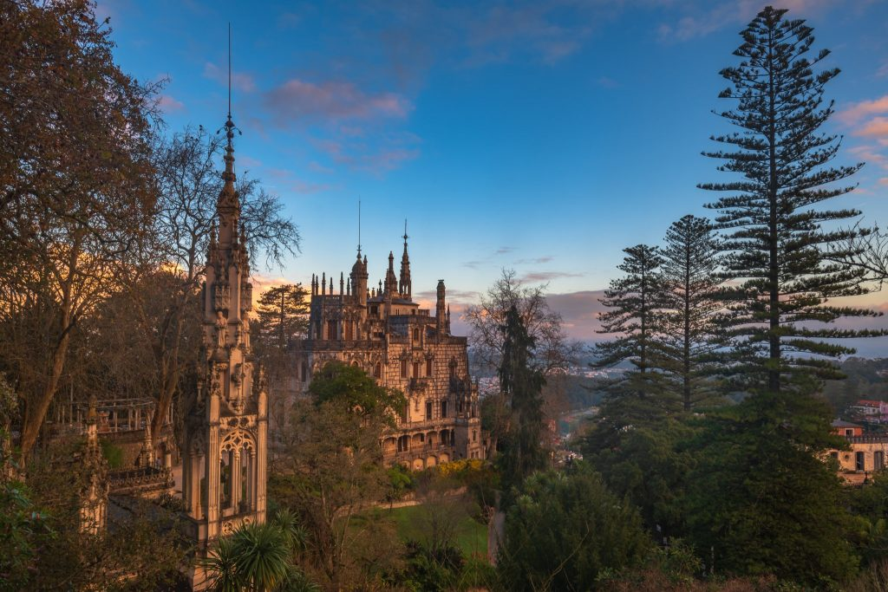
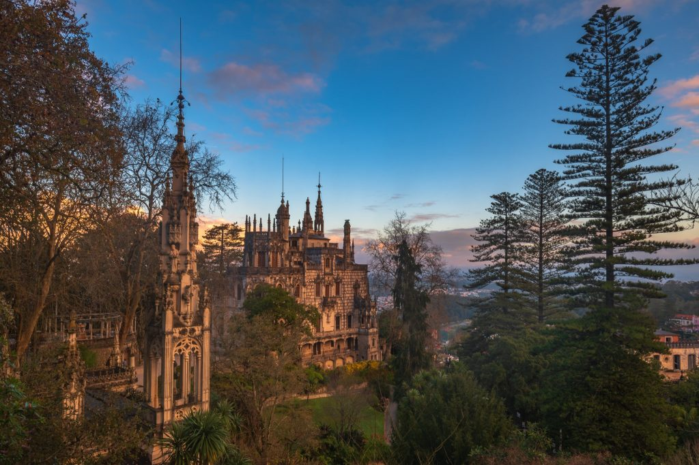

Palácio
Projetado pelo arquiteto italiano Luigi Manini, em 1905 e erguido no embasamento da mansão dos anteriores proprietários, o Palácio da Regaleira destaca-se pela sua monumentalidade e evocação revivalista ao estilo nacional, o Manuelino. Construído em pedra calcária e implantado na encosta da quinta virada à Vila de Sintra, a sua construção deu primazia às perspetivas panorâmicas. A vivência nesta casa foi então caracterizada por um conforto extraordinário à época proporcionado pelo desenvolvimento tecnológico. Com corrente elétrica fornecida pelo gerador, aquecimento central proveniente da caldeira instalada na cave do palácio e água canalizada, a família Carvalho Monteiro usufruiu de um bem-estar incomum à época, numa harmonia entre o revivalismo artístico e as novas tecnologias.